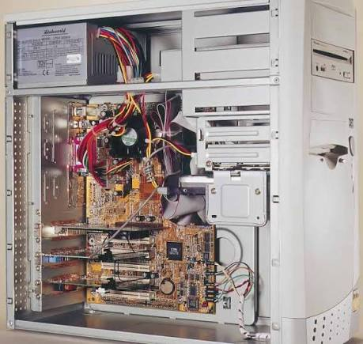

Introducción
El hardware son todos los componentes físicos de una computadora, como el procesador, la memoria RAM, el almacenamiento, la placa madre los ventiladores, etc. Con el paso del tiempo, los componentes pueden acumular polvo y suciedad.
El mantenimiento preventivo permite cuidar el equipo antes de que aparezcan fallas importantes. Realizar tareas de limpieza, revisión y control de temperatura ayuda a mantener la computadora en buenas condiciones.

¿Qué es el mantenimiento preventivo?
El mantenimiento preventivo del hardware consiste en realizar revisiones, limpiezas y cuidados de los componentes físicos de una computadora de forma periódica, con el objetivo de prevenir problemas y prolongar la vida útil del equipo.
A diferencia del mantenimiento correctivo, que se realiza cuando ya existe una falla, el mantenimiento preventivo busca detectar y evitar posibles inconvenientes antes de que se conviertan en problemas graves.
¿Cómo se realiza?
Para realizar un mantenimiento preventivo es importante apagar y desconectar correctamente el equipo. Luego se pueden revisar sus componentes y eliminar el polvo acumulado utilizando herramientas adecuadas.
Tareas principales
- Limpiar el polvo del gabinete y de sus componentes.
- Limpiar los ventiladores y comprobar que funcionen correctamente.
- Revisar los cables y las conexiones internas.
- Comprobar que las temperaturas del equipo sean normales.
- Revisar el estado de los dispositivos de almacenamiento.
- Comprobar que los componentes estén correctamente colocados.

Comparación entre mantenimiento preventivo y correctivo
| Característica | Preventivo | Correctivo |
|---|---|---|
| Momento | Antes de que aparezca una falla | Después de que aparece una falla |
| Objetivo | Prevenir problemas | Solucionar problemas |
| Ejemplo | Limpieza de ventiladores | Reemplazo de un ventilador averiado |
| Beneficio | Reduce el riesgo de fallas | Permite recuperar un equipo con problemas |
Ventajas y recomendaciones
Realizar mantenimiento preventivo de manera periódica puede ayudar a conservar el rendimiento y la estabilidad del equipo.
- Ayuda a prolongar la vida útil de los componentes.
- Reduce la posibilidad de sobrecalentamiento.
- Permite detectar problemas antes de que empeoren.
- Ayuda a mantener un funcionamiento más estable.
- Puede reducir gastos provocados por reparaciones importantes.
Importante: antes de manipular el interior de una computadora, debe apagarse y desconectarse de la corriente. También es recomendable utilizar herramientas apropiadas y evitar dañar los componentes.
Para ampliar la información
Conclusión
El mantenimiento preventivo del hardware es una práctica importante para conservar una computadora en buenas condiciones. La limpieza periódica, la revisión de las conexiones y el control de la refrigeración permiten prevenir distintos problemas y cuidar los componentes.
En conclusión, dedicar tiempo al mantenimiento del equipo puede evitar fallas innecesarias y contribuir a que la computadora tenga una vida útil más prolongada.